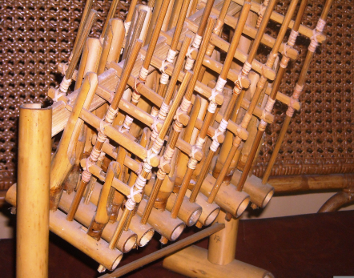
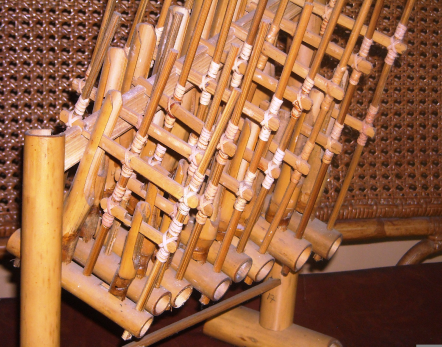

Dengarkan Harmoni Nusantara dengan Alat Musik Tradisional Indonesia
Explore Sekarang


Apa yang kami tawarkan?
Kami menawarkan artikel, galeri, dan seputar alat alat musik tradisional di Indonesia yang dapat anda pelajari secara mudah dan lengkap.
34
Tersedia berbagai alat musik tradisional dari 34 provinsi yang ada di Indonesia.
 
